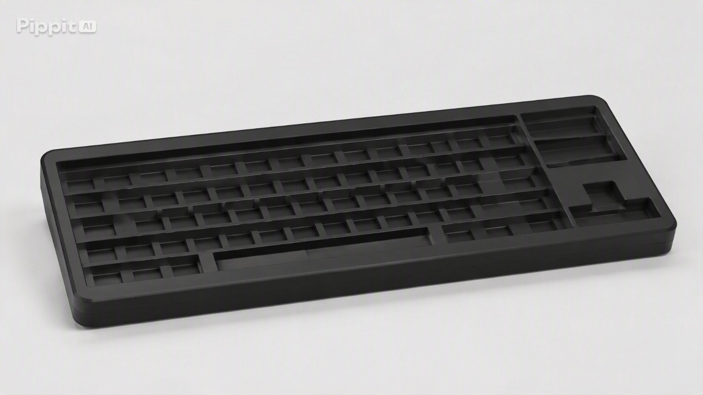

1 - O Guia dos Mousepads de Gelatina: Moda ou Futuro da Ergonomia?

Quem navega pelas redes sociais já deve ter visto setups modernos e coloridos com um acessório diferente: o
mousepad de gelatina.
O que começou como uma tendência visual entre criadores de conteúdo rapidamente virou um fenômeno de vendas.
Mas será que ele funciona no dia a dia?
O que é o Mousepad de Gelatina?
Diferente dos modelos tradicionais de tecido ou couro, esse acessório é feito de gel de borracha macia de
alta densidade.
O resultado é uma peça transparente, fofinha e muito flexível.
3 Motivos para o Sucesso
- Visual Sensorial: A sensação de apertar a peça e ver ela voltar ao formato original virou febre na internet.
- Apoio Ergonômico: O material se molda ao formato do pulso, ajudando a evitar dores após muitas horas no computador.
- Sensação Gelada: O gel mantém um toque naturalmente frio, o que ajuda no conforto em dias quentes.
Pontos de Atenção
Fique atento antes de comprar: O tipo de deslize dele é diferente do tecido comum, então pode não ter
a precisão exata que jogadores de jogos competitivos precisam.
Além disso, a superfície precisa ser limpa com frequência para não juntar poeira.
Vale a Pena Comprar?
- Para trabalho e estudo: É uma ótima opção de conforto e estilo.
- Para jogos pesados: Pode precisar de um tempo de adaptação.
2 - Como baixar wi-fi de graça no seu computador
Anunciado o Wi-fi 2.0, agora disponível para dowlound direto!

Você já imaginou poder baixar Wi-Fi gratuitamente no seu computador, sem precisar de roteador, cabos ou
planos de internet? Neste tutorial,
você aprenderá uma maneira revolucionária de conseguir internet de forma simples, prática e, claro,
totalmente duvidosa.
Prepare-se para descobrir os segredos da tecnologia mais avançada que nunca existiu!
Etapa 1: Prepare seu computador
Ligue o computador e verifique se ele está conectado à tomada. Afinal, sem energia, nem o Wi-Fi consegue
trabalhar.
Confira também se o teclado e o mouse estão funcionando, pois você precisará deles para realizar o
download.
Caso o computador esteja muito lento, talvez seja necessário reiniciá-lo para aumentar a velocidade da
internet.
Etapa 2: Abra o navegador
Acesse o Google e pesquise por “Download de Wi-Fi grátis”. Tenha cuidado para não pesquisar apenas “Wi-Fi”,
pois você pode acabar encontrando redes próximas.
Para obter resultados mais precisos, acrescente palavras como “rápido”, “ilimitado” e “100% gratuito”.
Quanto mais específico for o pedido, maior será a esperança de encontrar uma solução milagrosa.
Etapa 3: Escolha o arquivo
Procure um arquivo com o nome “Wi-Fi_Grátis_100%_Real.zip”. Quanto mais longo o nome, maior a tecnologia
envolvida.
Observe também se o arquivo possui uma imagem de roteador ou um símbolo de internet, pois isso transmite
mais confiança.
Se aparecer uma mensagem dizendo que você foi selecionado para receber internet ilimitada, comemore
discretamente e continue o procedimento.
Etapa 4: Inicie o download
Clique no botão de download e aguarde. O tempo pode variar de acordo com a velocidade da sua internet,
o que é um pequeno problema quando você ainda está tentando baixá-la. Enquanto espera, você pode abrir outra
aba para pesquisar como acelerar o download de Wi-Fi.
Se o arquivo demorar muito, não desista: talvez a internet esteja sendo compactada antes de chegar ao
computador.
Etapa 5: Instale o Wi-Fi
Após o download, abra o arquivo e siga as instruções exibidas na tela. Pode ser necessário clicar em
“Avançar”, “Aceitar os termos” e “Instalar agora”.
Se aparecer a mensagem “Wi-Fi instalado com sucesso”, comemore: você acaba de revolucionar a
informática.
Caso o programa solicite uma senha, tente utilizar “123456”, pois essa é uma das combinações mais conhecidas
do universo tecnológico.
Etapa 6: Teste sua nova conexão
Abra o navegador e tente acessar algum site. Caso a página não carregue, não se preocupe.
Talvez seja necessário baixar mais Wi-Fi para melhorar o sinal.
Você também pode verificar se o computador está conectado a uma rede ou se o ícone de internet apresenta
alguma mensagem de erro.
3 - Teclados Sem Teclas: Tendência Minimalista no Mundo Tech

Quem acompanha novidades de tecnologia e decoração de mesas já deve ter visto uma nova tendência: teclados
que vêm apenas com a carcaça e os encaixes, completamente sem as teclas físicas.
Essa proposta minimalista e personalizável virou assunto nos blogs de tecnologia. Mas qual é a ideia por
trás desse modelo?
O que é o Teclado Sem Teclas?
Trata-se da estrutura base de um teclado (o corpo com os encaixes dos switches), entregue totalmente vazia e
sem os botões superiores.
O visual traz uma estética limpa, moderna e diferente de tudo o que estamos acostumados a ver em escritórios
tradicionais.
3 Motivos para a Popularidade
- Personalização Total: O usuário ganha a liberdade de escolher cada tecla individualmente, montando as cores e texturas que preferir.
- Design Minimalista: A estrutura lisa e monocromática cria um visual muito organizado no setup de trabalho.
- Foco em Entusiastas: Permite trocar peças com facilidade para manutenção ou para mudar o visual da mesa quando quiser.
Pontos de Atenção
Fique atento antes de comprar: Esse tipo de produto costuma ser vendido como uma base para
montagem.
Isso significa que você precisará adquirir os botões separadamente para conseguir digitar normalmente no dia
a dia.
Vale a Pena Investir?
- Para quem busca estilo e customização: É uma excelente opção para criar um visual único.
- Para quem quer praticidade imediata: Pode não ser ideal, pois exige a compra e montagem das peças restantes.